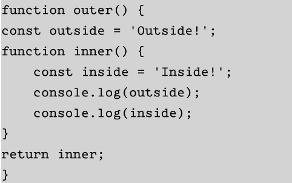
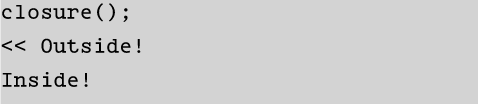

Week 7
Further Functions
-
This kind of functions are first-class objects. This kind of functions can pass around in the same way as every other value
- The call() method
-
Immediately Invoked Function Expression
-
Creating self - containe Code Blocks
-
Callbacks
When we click on events, we expect to this tasks do not hold up the execution of others parts
To summarize the function of what callls back do: The control is handed back to the program and the next line in the proram is run
A good use to this method is by using them in the log in forms. The user is returned base on the player information.
When we use callbacks, the fuction can be written as functions that use callbacks invoked one each ask has been completed
-
Closures
A closure is formed when the inner function is returned by the outer function, maintaining access to any variables declared inside the enclosing function.

const closure = outer()
WHat this does now is that closure has access to both functions outer() and inner()

This function requires any parameters as the following:


This are functions that as its name suggests, is invoked as soon as it is defined.

temp constants does not exist after the function has been invoked
The example below shows that a block of code inside its won private scope so it does not interfere with any other part scope so it does not interfere with any other part of the program.

AJAX
This is what allows Javascipt to go out to APIs and gather information from other sources. This is used with the Fetch API and can be used to gather current information or stored information. Like Open Weather Maps, SWAPI, or the National Weather Service.
- AJAX allows Javascipt to request resources from a server on behalf of the client
- The most commonly used of AJAX nowdays is JSON, which is easier to to parse tha XML. It also natevely supported in Javascript.
- Ajax is usd more than ever to transport data back and forth between sites.